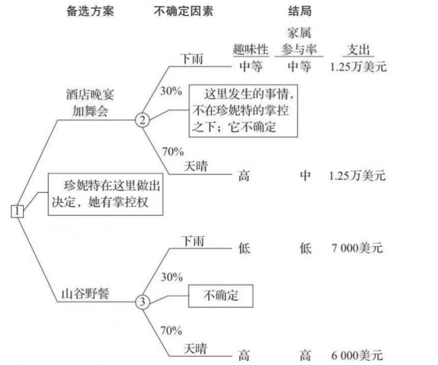
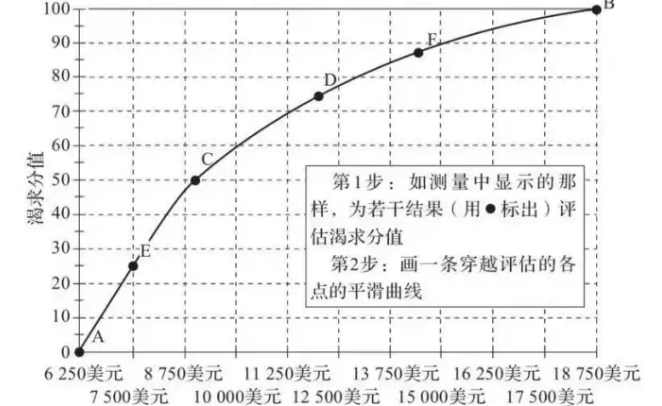

title: "决策的艺术" status: public date: 2025-07-20
决策的艺术
[!NOTE]
阅读时间： 2025年1月
作者：约翰S.哈蒙德、拉尔夫L.基尼、霍华德•雷法
-
明智的选择应当可以让自己“掌控局面”，包括
- 定义正确的决策问题
- 细化目标
- 找出创造性的备选方案
- 权衡利弊 --> 决策的目的是在不完美的各种可能性中做出聪明的选择
- 澄清不确定性
- 考虑风险承受力
- 考虑相关联的决策
- 避免各种心理因素影响，例如“决策初期闪过的念头”
-
决策问题定义
- 机遇往往藏在困难之中
- 定义问题时
- 问问自己是什么触发了决策，你为什么要考虑它
- 需要注意，问题题面本身可能让你产生偏见
- 问题的定义往往包括了缩小你的选择范围的限制条件。
- 例如，老板让你选择哪个电邮软件包，但是其实真的问题是“如何有效管理公司直邮项目”
-
定义问题目标
- 决策者定义目标时：往往将注意力狭窄范围内，注重短期，忽略长期，忽略真正目标
- 方法
- 编写愿望清单
- 设想怎样向他人解释你的选择，怎样证明他的合理性
- 得到根本目标：不停问自己“为什么”，并回答，直到问不出来为止
- 只有根本目标才能被用于评估和比较备选方案
- 决策后，问问自己是否自己喜欢这个选择。
- 如果不喜欢，可能错误阐述了目标
- 目标不应该受到数据的易用性和可用性限制
-
备选方案
- 因为人的懒惰心理和对习惯的依赖
- 大部分人习惯把自己限制在有限的方案内
- 或者选择第一个可能的方案
- 或者依赖于他人提供的方案
- 迟疑不决，不利于做出明智之选 （等待中会错过机会，也跟懒惰心理有关）
- 很多方案的局限是自己假想的，不一定存在
- 要先进行独立思考
- 不断唤醒潜意识，潜意识也在思考提供灵感，要赶紧记下来，避免忘掉细节
- 备选方案要适合问题
- 过程备选方案：决策过程（选举，仲裁等）
- 双赢备选方案：根据对方决策目标，找到双赢点
- 信息收集备选方案：货比三家，市场调查
- 延缓时间备选方案：必要时，推迟某项决策，争取更多时间。但是要准备好一些机会错失的代价
- 因为十全十美的方案不存在 要知道什么时候停止，一般回答以下所有问题为Yes即可：
- 是否已经努力合适的备选方案
- 是否对方案感到满意
- 是否想了很多方案，与其他方案大相径庭（有充分发挥你的创造力）
- 是否决策的其他要素也会使你划掉一定时间和经历
- 是否把时间花在其他决策或者活动上更有创造力？
- 因为人的懒惰心理和对习惯的依赖
-
用结果描述备选方案
- 用同一个且与目标有相关的标尺给结果打分
- 不要过分重视数据（只因为他们容易得到），需要足够重视无法用数据度量的目标
- 充分利用可用信息
- 直接到最终方案的一种折中是：先试后买
-
取舍
-
用等价置换简化决策，置换前要多收集信息
-
删除对比上和某一个选项明显有劣势的选项
-
接受不确定性因素，精明的选择也有糟糕的结局（或者反之）
-
利用风险预测简化与不确定性因素有关的决策（概率加权决策树）
- 每个人的风险承受能力不同

-
根据渴求度做筛选 （并非所有决策都要这么做，对人生最重要的一些问题可以这样操作）
- 对所有结局的渴求程度打分
- 计算每种结局对对应备选方案总体渴求程度的贡献
- 计算总的渴求分，比较，并做出选择
- 画渴求曲线和风险承受力关联，解决渴求分没有考虑风险承受力的问题，帮助决策

- 风险处理办法
- 分摊风险
- 寻求降低风险的信息
- 分散风险 （不要把鸡蛋放在一个篮子里）
- 对冲风险
- 对风险投保
-
-
决策是 决策-学习-再决策-再学习 的过程
-
警惕如下心理陷阱
- 先入为主： 靠多从不同角度思考问题，多独立思考来避免他人意见对你形成先入为主的印象，咨询他人不要表达意见避免自己对别人形成先入为主的印象
- 保持现状：大量心理实验表明，人们依赖现状而不愿打破它（例如，汽车是不用马拉的马车）
- 牢记目标，与现状对比
- 仔细思考其他选择
- 不要夸大改变现状需要付出的努力和代价
- 沉没成本陷阱（例如，不愿意卖掉亏损的股票）
- 做任何决策时，都得自觉将一切沉没成本排除在外，它们会干扰思考
- 检讨以前错误决策，看看自己为什么受困扰，勇敢解决问题
- 安排轮换不同的人做决策
- 只看自己想要的：证实性陷阱 ：人们总是被自己喜欢的事务吸引。咨询意见时，不要提诱导性问题
- 错误的提问方式：框架性陷阱： “祈祷时能抽烟吗？” v.s. “抽烟时能祈祷吗？”
- 参照物不同，给人造成的印象就不同。所以不要轻易接受提给你问题的框架
- 过于自信
- 避免先入为主
- 勇于质疑专家
- 焦虑于印象深刻的事件：记忆陷阱：一朝被蛇咬十年怕井绳。
- 尽量获取客观数据
- 仔细检查自己的假设前提，确保错误记忆没有影响自己思维
- 忽略相关信息：基础比率陷阱： “不擅长社交”是对某个男性的描述，他更可能是图书管理员还是推销员。其实是推销员男性基数更大，但是人们更倾向于把推销员和社交关联
- 歪曲概率和估计结果：谨慎陷阱：过于谨慎把比率从1%提到1/20
- 诚实不掺水分的预测估计
- 对信息提供者强调需要客观信息
- 试图寻找不存在的规律：企图猜透随机现象 和 巧合神秘化：惊奇陷阱
- 不要试图看透和预测纯随机事件
-
刻意练习